공식과 첫 레포, VoiceStudio
영상의 틀은 첫 슬라이드에 다 나와요. 왼쪽부터 노란 칸 '무료 깃허브 레포', 파란 칸 'Claude Code가 돌린다', 초록 칸 '나는 결과를 판다', 주황 칸 'treg가 살 사람을 찾는다'로 이어져요. 아래 세 줄은 모든 제안에 같은 다섯 항목을 붙이고, 샘플을 먼저 보내고, 파는 사람은 코딩을 못 해도 된다는 전제예요.
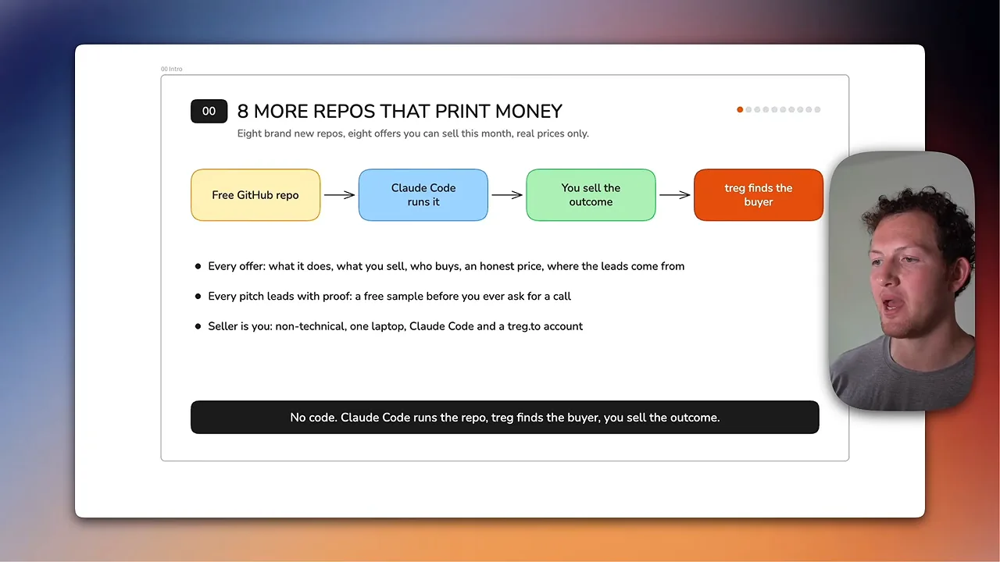
이후 여덟 개 레포는 모두 같은 카드 한 장으로 설명돼요. 왼쪽 네 칸은 무엇을 하는지, 무엇을 파는지, 고객이 얻는 것, 누구에게 파는지예요. 오른쪽은 가격, 고객 찾는 다섯 단계, 고객 수에 따른 매출 예시예요. 카드마다 고객 찾는 순서가 거의 같아서, 공통 뼈대를 한 그림으로 먼저 정리해 둘게요.
VoiceStudio: 상자에 담긴 스페인어 채널
첫 레포는 VoiceStudio예요. 오른쪽 About 칸에 'ElevenLabs를 대신하는 완전 로컬 오픈소스'라고 적혀 있고, 별은 92.5k예요. 음성 복제, 영상 더빙, 받아쓰기, 오디오북까지 646개 언어로 된다고 해요.
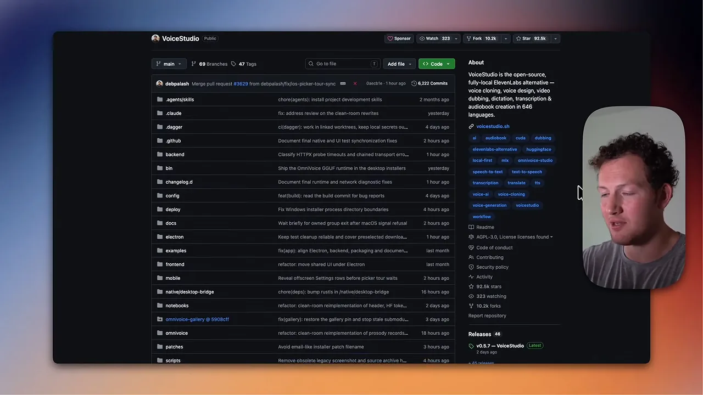
카드에서 파란 칸이 파는 물건이에요. 크리에이터의 모든 영상을 본인 목소리로 스페인어 더빙하고, 자막을 붙이고, 채널에 올려 주는 것까지 묶어서 '상자에 담긴 스페인어 채널'이라고 불러요. 초록 칸처럼 고객은 녹화를 더 하지 않고도 스페인어권 시청자를 새로 얻어요.
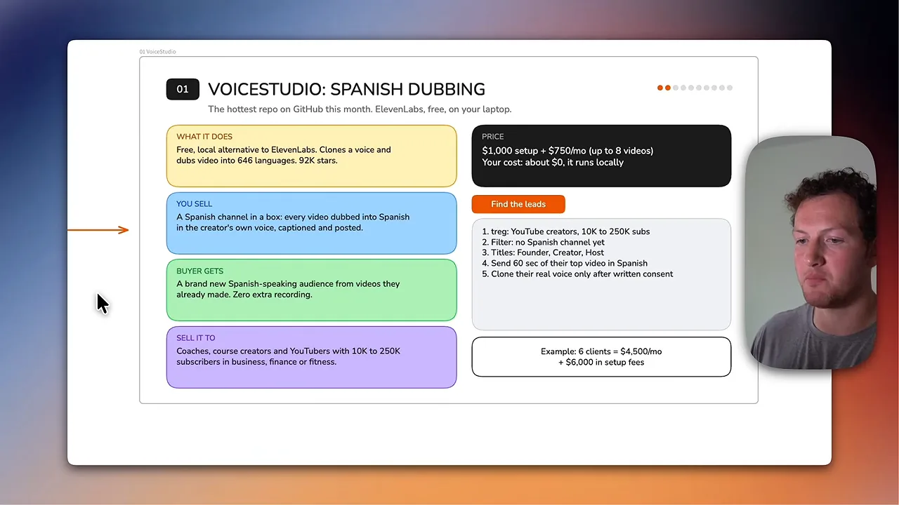
대상은 비즈니스·금융·피트니스 분야에서 구독자 1만~25만 명인 코치, 강의 판매자, 유튜버예요. 발표자가 이 분야를 고른 건 고객 한 명의 가치가 높아서예요. 가격은 셋업 1,000달러에 월 750달러이고, 로컬에서 돌리니 원가는 사실상 0이에요. 영업은 스페인어 채널이 아직 없는 크리에이터를 찾아, 대표 영상 60초를 스페인어로 만들어 보내는 데서 시작해요. 그 샘플이 대신 팔아 준다는 거예요. 실제 목소리 복제는 서면 동의를 받은 뒤에만 해요.
고객 찾기에 쓰는 treg는 첫 화면에 'OpenRouter for agent tools'라고 적힌 서비스예요. 오른쪽에 Hunter, Lusha, PDL(People Data Labs), Crunchbase 같은 연락처·회사 데이터 도구가 모여 있고, 아래에 '쓴 만큼 결제, 좌석 없음'이라고 적혀 있어요. 발표자는 Apollo나 Hunter를 월 구독하는 대신 이걸로 몇 센트씩 내고 찾는다고 해요.
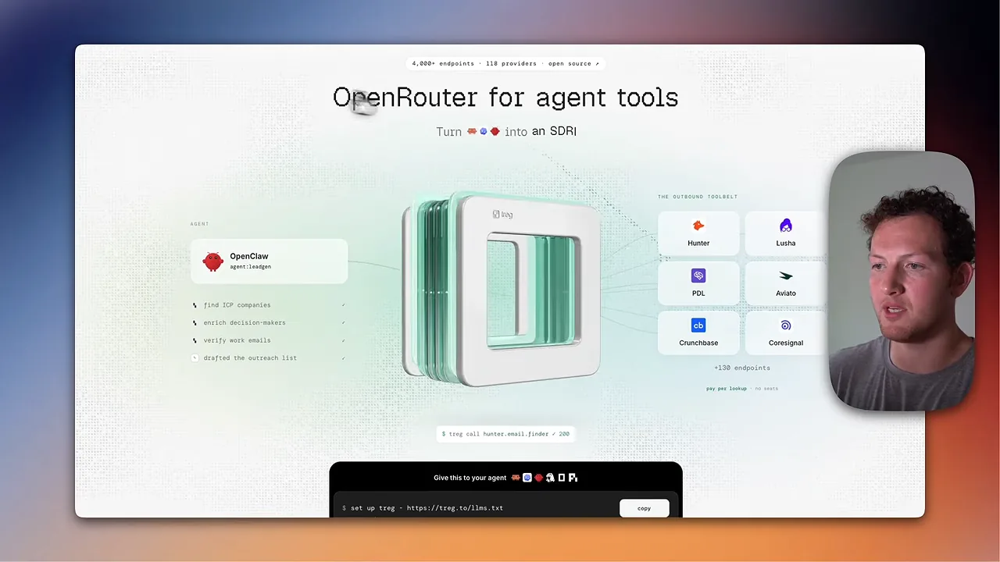
Security Audit Skill로 AI 앱 보안 점검
두 번째는 Cloudflare가 공개한 security-audit-skill이에요. README에는 코딩 에이전트를 보안 감사 도구로 바꾸는 스킬이라고 적혀 있어요. 정찰, 커버리지 기반 탐색, 후보 검증, 구조화된 출력, 독립 재검증 순서로 이어지는 단계가 화면에 보여요. 발표자는 이걸 '6단계 감사'라고 불러요.
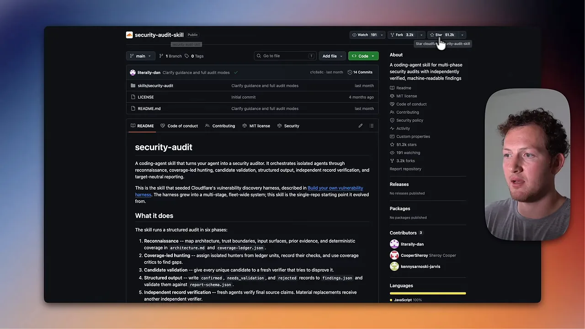
파는 건 AI(Artificial Intelligence)로 만든 앱의 보안 점검이에요. 발표자는 바이브 코딩으로 만든 앱이 보안에 약하기로 유명하다고 말해요. 그래서 확인된 구멍마다 쉬운 말로 쓴 보고서와 고칠 목록을 넘겨요. 초록 칸처럼 고객이 얻는 건 노출된 API(Application Programming Interface) 키나 열린 데이터베이스를 해커나 고객보다 먼저 찾는 거예요.
대상은 Lovable, Bolt, Replit, Cursor로 앱을 만들었고 이미 돈 내는 사용자가 있는 비개발자 창업자예요. 개발 대행사가 이 감사를 자기 서비스로 되팔게 할 수도 있어요. 가격은 1회 1,500달러에, 새 버전을 낼 때마다 다시 점검하는 리테이너가 월 300달러예요. 발표자는 기술 제품이 계속 업데이트되고, 업데이트마다 버그와 보안 구멍이 생기니 리테이너가 자연스럽다고 설명해요.
고객은 최근 12개월 안에 출시했고 직원이 1~10명이며 앱이 운영 중인 회사에서 찾아요. 창업자, CEO(Chief Executive Officer), CTO(Chief Technology Officer)에게 'AI로 만든 앱의 구멍 7가지' 체크리스트를 무료로 보내요. 읽고 나면 '우리 앱에도 하나쯤 있겠는데' 하게 만드는 리드 마그넷이에요. 서면 허락 없이는 운영 중인 앱을 절대 테스트하지 않는다는 게 다섯 번째 단계예요. 월 4건이면 6,000달러, 리테이너 5곳이면 월 1,500달러가 반복 매출로 쌓여요.
Anthropic 플러그인으로 영업팀 세팅
세 번째는 Anthropic이 직접 공개한 플러그인 모음이에요. 레포 README의 표를 보면 productivity, sales, customer-support, product-management, marketing, legal, finance 같은 직무별 플러그인이 있고, 오른쪽 열에 각자 연결되는 도구가 적혀 있어요. sales 줄에는 Slack, HubSpot, Close, Clay, ZoomInfo가 보여요.

파는 건 sales 플러그인을 고객의 CRM(Customer Relationship Management)과 영업 방식에 맞게 연결해 주는 일이에요. 결과물은 통화 준비, 후속 메일 초안, 월요일 파이프라인 점검 세 가지예요. 영업 담당자가 통화 하나를 준비하는 시간이 20분에서 2분으로 줄고 후속 연락이 당일에 나가요. 발표자는 이걸 스피드 투 리드로 설명해요. 빨리 답할수록 거래가 더 많이 성사된다는 거예요.
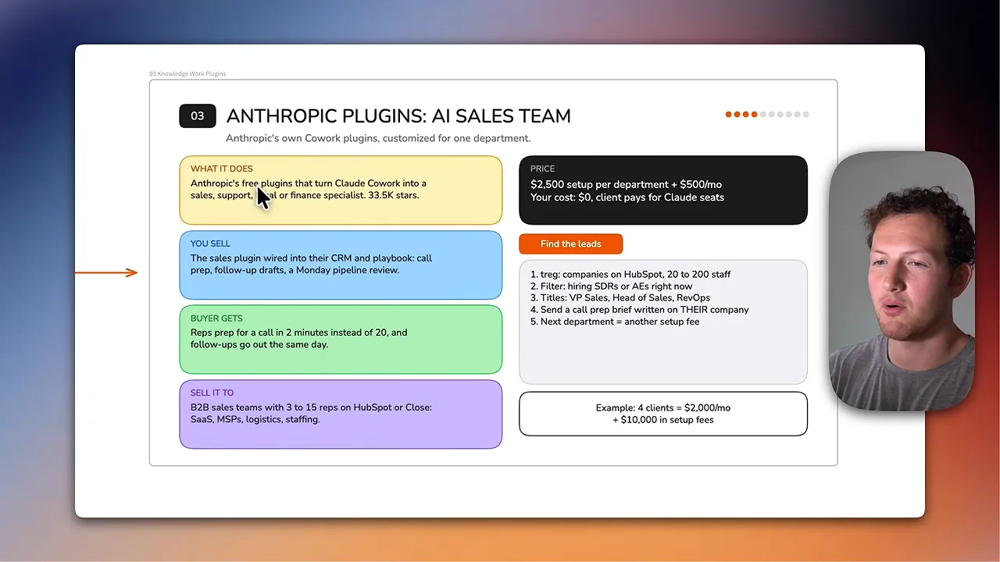
대상은 HubSpot이나 Close를 쓰고 영업 담당자가 3~15명인 B2B(Business to Business) 팀이에요. SaaS, MSP(Managed Service Provider), 물류, 인력 회사를 예로 들어요. 가격은 부서당 셋업 2,500달러에 월 500달러예요. 고객이 쓰는 Claude 팀·엔터프라이즈 요금제 위에 얹으니 내 쪽 원가는 없어요. 다른 부서까지 세팅하면 셋업 비용을 또 받아요.
treg로 HubSpot이나 Close를 쓰는 회사를 찾고, 직원 20~200명으로 거른 뒤, 지금 SDR(Sales Development Representative)이나 AE(Account Executive)를 뽑는 곳만 남겨요. 채용 중이라는 건 성장 중이고 영업에 고민이 있다는 신호예요. 영업 부사장, 영업 책임자, RevOps 담당자에게 그 회사를 주제로 직접 쓴 통화 준비 브리프를 샘플로 보내요. 콜드 이메일을 받은 쪽이 자기 회사 이야기가 담긴 결과물을 먼저 보게 되는 거예요. 4곳에 한 부서씩만 해도 월 2,000달러에 셋업 10,000달러예요.
Agent Reach로 구매 의도 알림
네 번째 Agent Reach는 이 영상에서 별이 가장 많아요. 화면 오른쪽에 105.4k stars, README 배지에 깃허브 트렌딩 일간 1위와 글로벌 순위 126위가 보여요. 설명은 중국어지만 쓰는 법은 똑같다고 발표자가 말해요.

이 도구는 Claude Code나 Codex가 Reddit, X, YouTube, LinkedIn 채용 공고를 명령 하나로, API 비용 없이 읽게 해 줘요. 이걸로 파는 건 매일 받는 목록이에요. 고객이 파는 물건을 찾는 게시글 다섯 개와, 각 글에 고객 말투로 쓴 답글 초안이에요. 발표자는 특정 피부 세럼을 파는 화장품 회사를 예로 들어요. 그 세럼이 필요하다고 말하는 사람을 찾아 바로 대화에 끼어들게 해 주는 거예요.
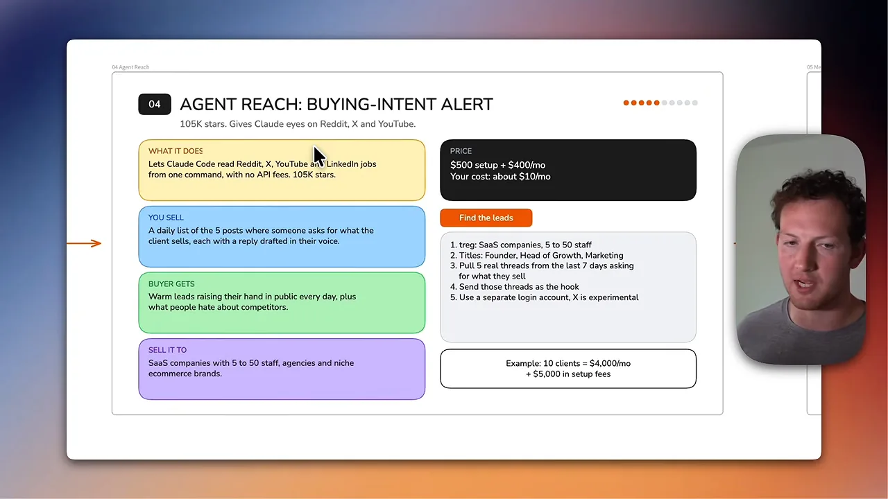
초록 칸에 적힌 고객의 이득은 두 가지예요. 공개적으로 손을 든 따뜻한 잠재 고객이 매일 들어오고, 사람들이 경쟁사에 대해 싫어하는 점도 함께 보여요. 그 불만을 보고 자기 제품을 고칠 수 있어요.
대상은 직원 5~50명 SaaS예요. 이 정도 규모면 제품이 시장에 맞는다는 증거가 있다고 봐요. 대행사와 틈새 이커머스 브랜드도 대상이에요. 셋업 500달러에 월 400달러, 원가는 호스팅 월 10달러 정도예요. 첫 연락에는 최근 7일 안에 그 회사 제품을 찾는 실제 글 다섯 개를 그대로 보내요. 결과물을 미리 보여 주는 게 곧 영업이에요. 10곳이면 월 4,000달러에 셋업 5,000달러예요.
Metabase로 사장님용 대시보드
다섯 번째 Metabase는 별 5만 개 가까운 BI(Business Intelligence) 도구예요. README 맨 위 대시보드 그림에 분기 매출 141.8k, 지역별 지도, 제품군별 막대가 한 화면에 모여 있어요. 발표자는 이 화면을 보여 주며 사장님들이 이런 걸 무척 원한다고 말해요. 대부분 자기 회사 숫자를 모르기 때문이에요.

파는 건 QuickBooks, CRM, 광고 계정을 핵심 숫자 5~10개짜리 대시보드 하나로 묶는 일이에요. 여기에 매주 월요일 Claude가 KPI(Key Performance Indicator) 요약 메일을 보내 줘요. 카드 위 부제가 'Tableau의 무료 대안을 월요일 아침 습관으로 판다'인 이유예요. 고객은 감 대신 현금, 계약 성사율, 작업별 마진을 보고 회사를 운영하게 돼요.
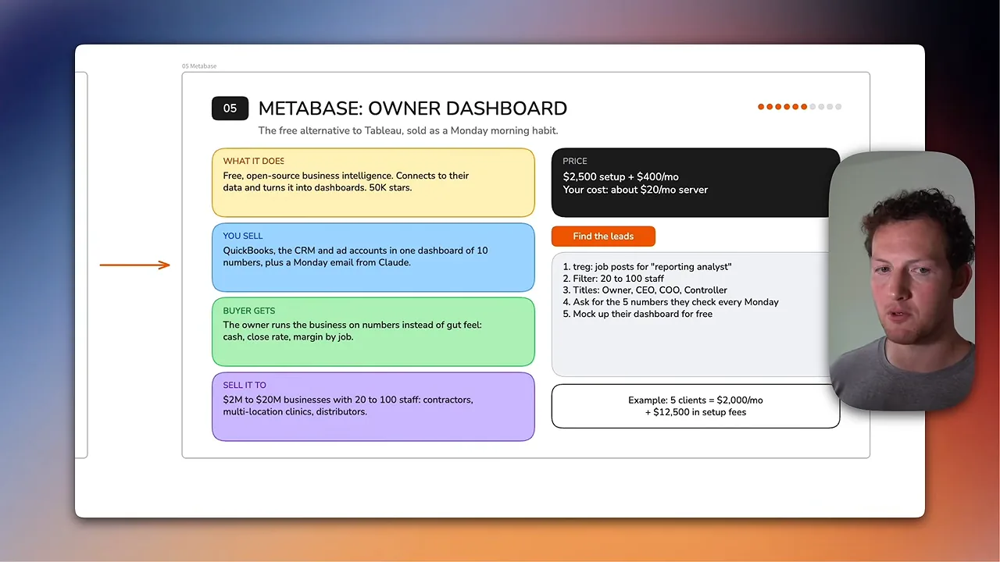
대상은 연매출 200만~2,000만 달러, 직원 20~100명인 회사예요. 숫자를 세밀하게 알아야 결정을 내릴 수 있을 만큼 큰 곳이에요. 시공사, 지점이 여러 개인 병원, 유통사, 제조사를 예로 들어요. 셋업 2,500달러에 월 400달러이고, 대시보드를 올릴 서버가 월 20달러 정도예요.
리포팅 분석가를 뽑는 회사를 찾아 직원 20~100명으로 거르고, 사장, CEO, COO(Chief Operating Officer), 재무 책임자에게 연락해요. 월요일마다 확인하는 숫자 다섯 개를 물어본 뒤 그 숫자로 대시보드 시안을 무료로 만들어 보내요. 통화하자고 조르는 것보다 결과물을 먼저 보여 주는 게 낫다는 게 이 영상 전체의 원칙이에요. 5곳이면 월 2,000달러에 셋업 12,500달러예요.
Paperless-ngx로 종이 없는 사무실
여섯 번째 Paperless-ngx는 별 47.2k의 문서 관리 시스템이에요. About 칸에 '스캔하고, 색인하고, 모든 문서를 보관한다'고 적혀 있고, 태그에 ocr, machine-learning이 보여요. 발표자는 병원, 부동산 관리회사, 권원 회사 중에 아직 종이 서류를 잔뜩 쓰는 곳이 놀랄 만큼 많다고 해요.
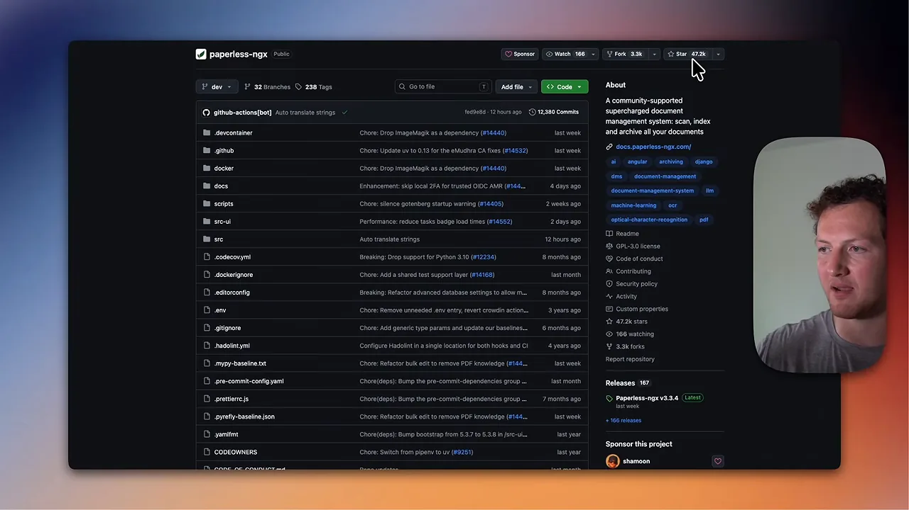
이 도구는 문서를 스캔하고, 글자를 읽어 내고, 자동으로 태그를 붙이고, 본문까지 검색하게 해 줘요. 파는 건 30일 안에 끝내는 패키지예요. 옛 서류를 디지털로 옮기고, 새로 오는 우편은 자동 분류하고, 문서고 전체에 Claude로 질문할 수 있게 해요. 회사가 자기 문서고 전체에 질문을 던질 수 있다는 게 발표자가 강조하는 장면이에요.
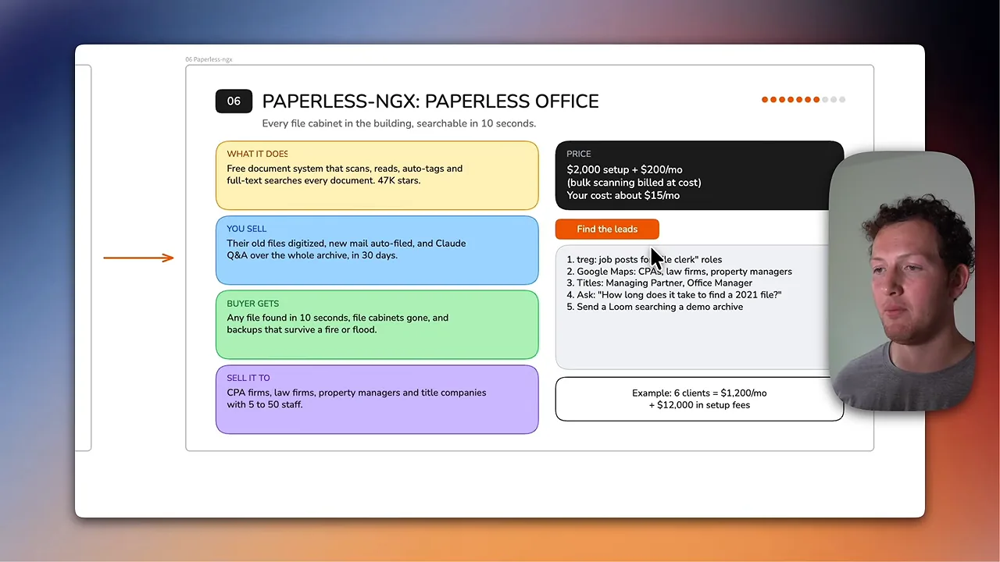
고객은 어떤 파일이든 10초 만에 찾고, 서류 캐비닛을 치우고, 화재나 홍수가 나도 백업이 남아요. 대상은 직원 5~50명인 회계사무소, 로펌, 부동산 관리회사, 권원 회사예요. 셋업 2,000달러에 월 200달러이고, 대량 스캔은 실비로 따로 청구해요. 스캔은 직접 할 필요 없이 사람을 써서 맡겨도 된다고 해요. 원가는 문서 보관 서버 월 15달러 정도이고, 이것도 고객에게 넘길 수 있어요.
문서 담당 직원 채용 공고를 내거나, Google 지도에 나오는 회계사무소·로펌·관리회사를 찾아요. 대표 파트너나 사무장에게 '2021년 파일 하나 찾는 데 얼마나 걸리세요?'라고 물어요. 대개 몇 분은 걸릴 테니, 답이 오면 데모 문서고를 검색하는 Loom 영상을 보내요. 6곳이면 월 1,200달러에 셋업 12,000달러예요.
Invoice Ninja로 미수금 받기
일곱 번째 Invoice Ninja는 별 1만 개, 지금 5버전인 청구서 도구예요. README에 공식 호스팅 버전과 셀프 호스팅 버전 두 가지가 있다고 적혀 있어요. 그 아래 문단에는 'source-available 코드'라는 표현과 연 40달러짜리 화이트 라벨 라이선스가 나와요.
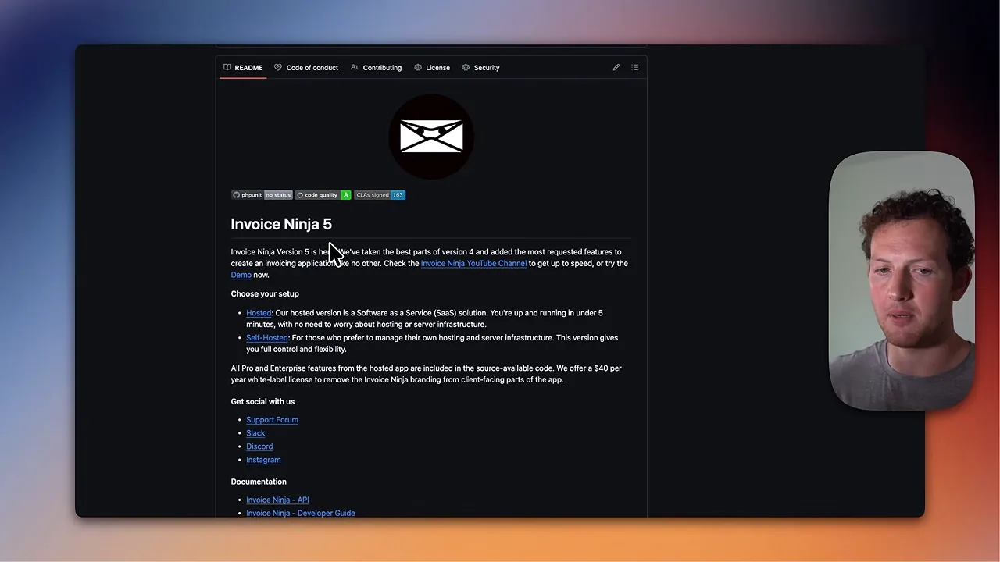
파는 건 미수금을 받아 내는 장치예요. 결제 링크가 달린 청구서를 보내고, 안 낸 사람에게 3·7·14·30일째 자동 독촉을 보내고, 더 늦으면 Claude가 쓴 단계별 독촉 메일을 보내요. 매주 누가 얼마를 안 냈는지 보고서도 줘요. 발표자는 유통사와 제조사 고객이 15일, 30일, 60일, 90일 넘게 대금을 미루는 게 흔하다고 말해요.
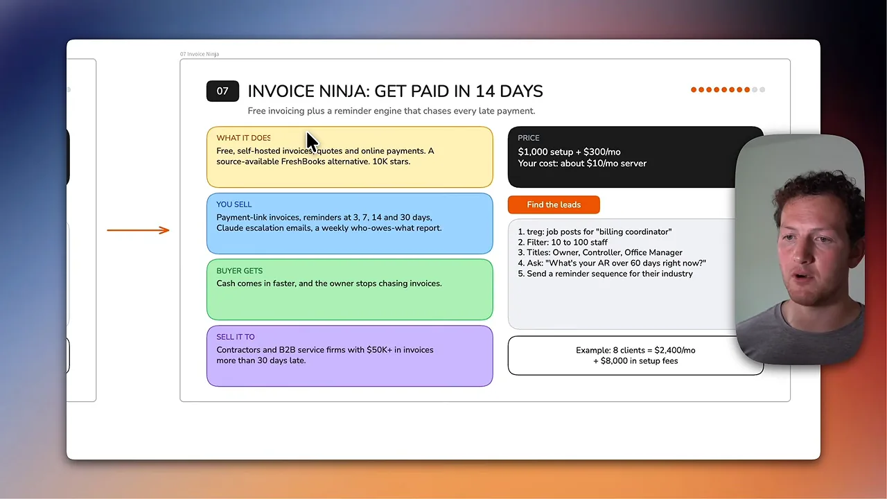
대상은 30일 넘게 밀린 청구액이 5만 달러 이상인 시공사, B2B 서비스 회사, 제조사, 유통사예요. 셋업 1,000달러에 월 300달러, 서버 원가는 월 10달러예요. '청구 담당자' 채용 공고를 찾아 직원 10~100명으로 거르고, 사장이나 재무 책임자, 사무장에게 '지금 60일 넘은 매출채권이 얼마인가요?'라고 물어요. 답이 오면 업종에 맞춘 독촉 시퀀스 샘플을 보내요. 8곳이면 월 2,400달러에 셋업 8,000달러예요.
Dub로 오프라인 마케팅 성적표
여덟 번째 Dub는 별 2만 5천 개의 링크 추적 플랫폼이에요. README 소개에 '짧은 링크와 전환 추적을 위한 오픈소스 링크 어트리뷰션 플랫폼'이라고 적혀 있고, 월 2억 5천만 번 넘는 클릭과 1,200만 개 넘는 링크를 처리한다고 해요. 아래 Self-Hosting 항목에 직접 설치하는 가이드도 있어요.

발표자의 문제의식은 이래요. 트럭을 랩핑하고 전화번호를 붙여도, 전화가 오면 그 사람이 트럭을 봤는지, 우편 전단지를 받았는지, 온라인 광고를 봤는지 알 수 없어요. 그래서 전단지, 현장 간판, 트럭 랩핑마다 서로 다른 QR(Quick Response) 코드나 링크를 붙이고 매달 어느 채널이 손님을 데려왔는지 보고해요. AI가 온라인 채널을 스팸으로 채울수록 오프라인 마케팅이 다시 늘 거라는 게 발표자의 예상이에요.
대상은 오프라인 마케팅에 월 3,000달러 이상 쓰는 집수리 업체와 부동산 팀이에요. 동네 인쇄소가 화이트 라벨로 되팔게 할 수도 있어요. 셋업 500달러에 월 250달러예요. treg로 Google 지도에서 HVAC(Heating, Ventilation, and Air Conditioning), 지붕, 배관 업체를 찾아 직원 10~50명으로 거르고, 사장이나 마케팅 담당자에게 '지난 전단지 세 번 중 어느 게 돈을 벌었나요?'라고 물어요. 카드 마지막 줄처럼 거의 아무도 답을 몰라요. 그 빈칸이 영업의 출발점이에요. 10곳이면 월 2,500달러에 셋업 5,000달러예요.
여덟 개를 나란히 놓고 보면
마지막 슬라이드는 여덟 개를 한 표로 묶어요. 레포, 파는 것, 파는 대상, 가격 네 열이고, Agent Reach 줄만 주황색으로 칠해져 있어요. 발표자가 첫 번째로 추천하는 서비스예요.
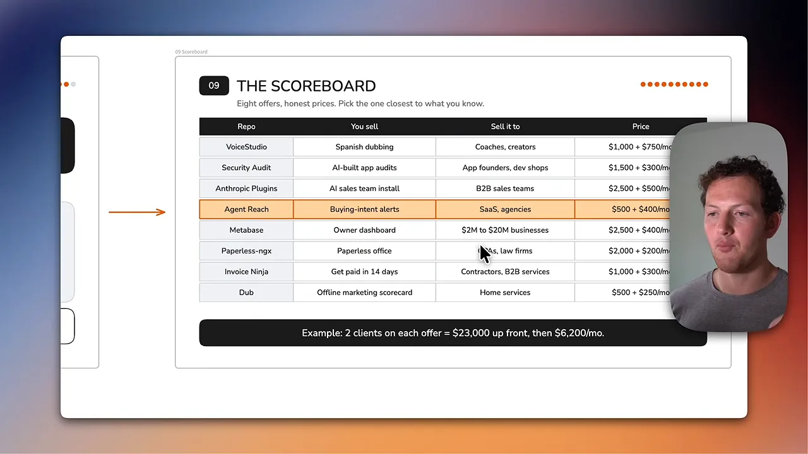
슬라이드의 가격 열은 발표자 얼굴에 일부 가려져 있어요. 각 레포 카드에 적힌 값을 모아 원가와 예시 매출까지 한 표로 옮겼어요.
| 레포 | 파는 것 | 가격 | 원가 | 카드의 예시 |
|---|---|---|---|---|
| VoiceStudio | 스페인어 더빙 채널 | $1,000 + 월 $750 | 약 $0 (로컬) | 6명 → 월 $4,500 + $6,000 |
| Security Audit Skill | AI 앱 보안 감사 | $1,500/회 + 월 $300 | 감사당 $20~60 | 4건 → $6,000, 리테이너 5곳 → 월 $1,500 |
| Anthropic 플러그인 | AI 영업팀 세팅 | 부서당 $2,500 + 월 $500 | $0 (고객이 좌석 부담) | 4곳 → 월 $2,000 + $10,000 |
| Agent Reach | 구매 의도 알림 | $500 + 월 $400 | 월 약 $10 | 10곳 → 월 $4,000 + $5,000 |
| Metabase | 사장님 대시보드 | $2,500 + 월 $400 | 서버 월 약 $20 | 5곳 → 월 $2,000 + $12,500 |
| Paperless-ngx | 종이 없는 사무실 | $2,000 + 월 $200 | 월 약 $15 | 6곳 → 월 $1,200 + $12,000 |
| Invoice Ninja | 미수금 독촉 | $1,000 + 월 $300 | 서버 월 약 $10 | 8곳 → 월 $2,400 + $8,000 |
| Dub | 오프라인 마케팅 성적표 | $500 + 월 $250 | Dub 클라우드 요금제 | 10곳 → 월 $2,500 + $5,000 |
표의 가격만 떼어 막대로 놓으면 서비스 성격이 갈려요. 셋업 비용이 큰 쪽은 Anthropic 플러그인과 Metabase처럼 고객 시스템에 붙여 주는 일이고, 월 이용료가 큰 쪽은 VoiceStudio처럼 매달 결과물을 새로 만들어 주는 일이에요.
여덟 개 모두 고객 두 명씩이면 셋업 23,000달러에 월 6,200달러이고, 순이익률은 99%라고 말해요. 표의 가격을 더해 보면 셋업 합계 11,500달러, 월 합계 3,100달러에 각각 2를 곱한 값이라 계산은 맞아요. 다만 99%는 서버와 토큰 비용만 원가로 친 숫자예요. 고객을 찾고 샘플을 만드는 데 드는 내 시간은 들어 있지 않아요.
발표자는 여덟 개를 한꺼번에 돌리지 말고 하나를 골라 깊게 파라고 권해요. 첫 번째로는 Agent Reach 구매 의도 알림을 SaaS와 대행사에 팔라고 해요.
that is the one that can literally get your client a new customer tomorrow
고객에게 말 그대로 내일 새 손님을 데려다줄 수 있는 게 그거예요.
— 영상 23:18
이미 원한다고 손든 사람을 바로 연결해 주니, 효과를 가장 빨리 보여 줄 수 있다는 이유예요.